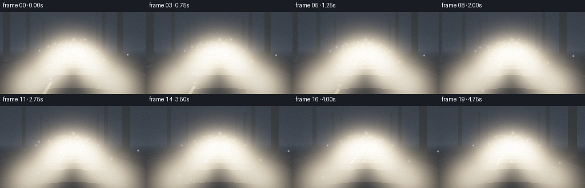
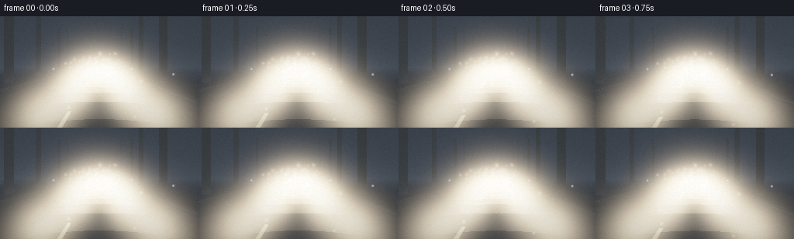
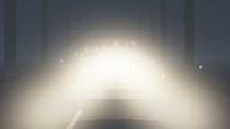
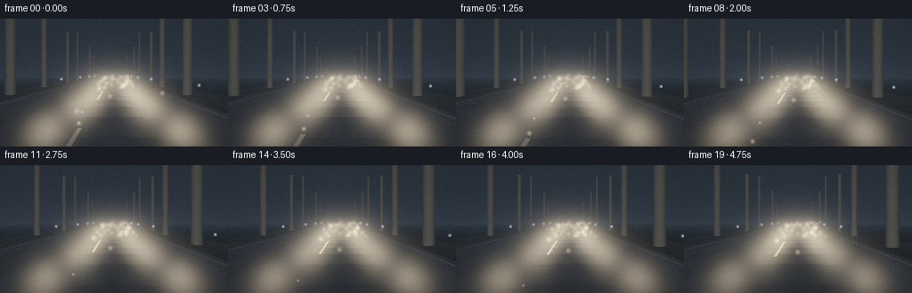
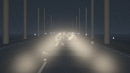
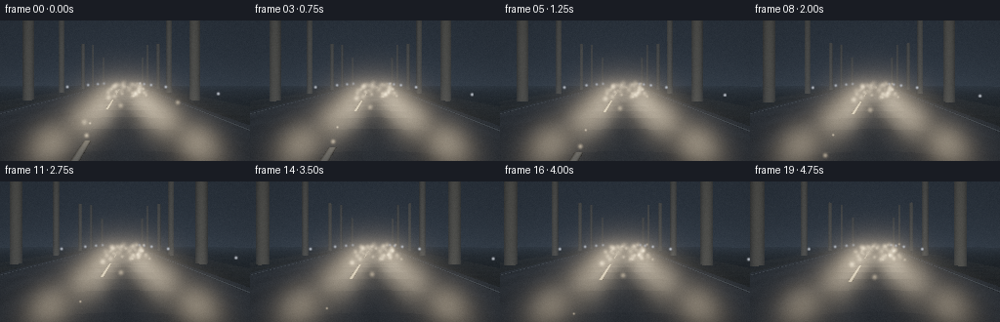
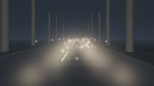
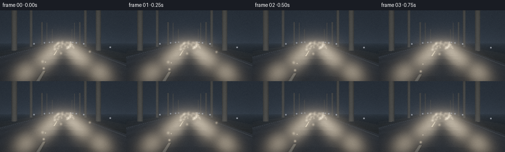
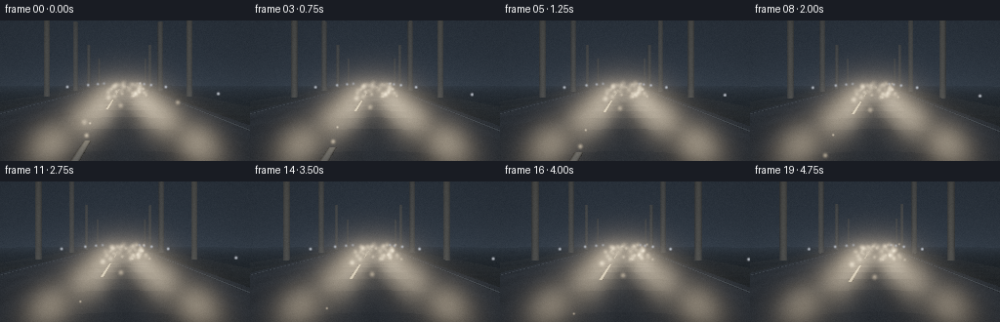

CODING AGENTS AS PIXEL WORLD MODELS
traex/DeepSeek-V4.1-Flash · phygen_051
点击播放 · 原生 RGB 像素
逐轮保存的候选
回放视频、检查图与代码变化。
每份候选均可单独播放。实际图片检查记录在下方工具轨迹中。
候选 01播放与检查图
点击播放 · 原生 RGB 像素


展开代码变化
--- 上一保存版本
+++ 本次保存版本
@@ -0,0 +1,332 @@
+from pathlib import Path
+
+import numpy as np
+from PIL import Image, ImageFilter
+
+import artifact_io
+
+
+WIDTH = 256
+HEIGHT = 144
+FRAMES = 20
+FPS = 4.0
+DT = 1.0 / FPS
+
+
+def smoothstep(edge0, edge1, value):
+ x = np.clip((value - edge0) / (edge1 - edge0), 0.0, 1.0)
+ return x * x * (3.0 - 2.0 * x)
+
+
+def beam_field(points, lights, gain, broad=False):
+ """Soft-edged headlamp cone, returned as an irradiance-like scalar field."""
+ field = np.zeros(points.shape[:-1], dtype=np.float32)
+ for light_pos, axis in lights:
+ rel = points - light_pos
+ along = np.sum(rel * axis, axis=-1)
+ closest = rel - along[..., None] * axis
+ perp = np.sqrt(np.sum(closest * closest, axis=-1) + 1e-8)
+ angle = 0.30 if broad else 0.175
+ radius = 0.13 + np.maximum(along, 0.0) * angle
+ core = np.exp(-2.4 * (perp / (radius + 1e-5)) ** 2)
+ distance_falloff = np.exp(-np.maximum(along, 0.0) / 32.0)
+ distance_falloff /= 1.0 + 0.018 * np.maximum(along, 0.0) ** 2
+ front = smoothstep(-0.15, 1.0, along)
+ field += core * distance_falloff * front
+ return gain * field
+
+
+def fog_noise(points, seconds):
+ x = points[..., 0]
+ y = points[..., 1]
+ z = points[..., 2]
+ swirl = np.sin(0.28 * x + 0.11 * z + 0.42 * seconds)
+ layer_a = np.sin(0.62 * x - 0.27 * z + 1.25 * y - 0.38 * seconds + 1.2 * swirl)
+ layer_b = np.sin(-0.38 * x + 0.49 * z + 0.75 * y + 0.22 * seconds + 0.7)
+ layer_c = np.sin(1.15 * x - 0.83 * z + 2.1 * y - 0.55 * seconds)
+ value = 0.50 + 0.22 * layer_a + 0.14 * layer_b + 0.07 * layer_c
+ return np.clip(value, 0.08, 0.95).astype(np.float32)
+
+
+def make_ray_grid(yaw, pitch):
+ yy, xx = np.mgrid[0:HEIGHT, 0:WIDTH].astype(np.float32)
+ u = (xx + 0.5) / WIDTH * 2.0 - 1.0
+ v = 1.0 - (yy + 0.5) / HEIGHT * 2.0
+ tan_h = np.tan(np.deg2rad(34.0))
+ tan_v = tan_h * HEIGHT / WIDTH
+ dx = u * tan_h
+ dy = v * tan_v + pitch
+ dz = np.ones_like(dx)
+ cy, sy = np.cos(yaw), np.sin(yaw)
+ rx = dx * cy + dz * sy
+ rz = -dx * sy + dz * cy
+ directions = np.stack((rx, dy, rz), axis=-1)
+ directions /= np.linalg.norm(directions, axis=-1, keepdims=True)
+ return directions
+
+
+def surface_scene(cam_pos, directions, lights, seconds):
+ """Ground plane, asphalt markings, and slim roadside tree trunks."""
+ depth = np.full((HEIGHT, WIDTH), np.inf, dtype=np.float32)
+ color = np.zeros((HEIGHT, WIDTH, 3), dtype=np.float32)
+ dy = directions[..., 1]
+ ground_t = np.where(dy < -0.004, -cam_pos[1] / dy, 85.0).astype(np.float32)
+ world = cam_pos[None, None, :] + directions * ground_t[..., None]
+ ground_valid = (dy < -0.004) & (ground_t > 0.3) & (ground_t < 85.0) & (world[..., 2] > 0.0)
+ x = world[..., 0]
+ z = world[..., 2]
+
+ road_mask = np.abs(x) < 4.0
+ shoulder_mask = (np.abs(x) >= 4.0) & (np.abs(x) < 6.4)
+ asphalt_tex = (
+ 0.82
+ + 0.08 * np.sin(1.7 * x + 0.45 * z)
+ + 0.06 * np.sin(4.6 * x - 1.25 * z + 0.8)
+ + 0.035 * np.sin(11.0 * x + 2.1 * z)
+ )
+ shoulder_tex = 0.78 + 0.16 * np.sin(2.4 * x - 0.7 * z) + 0.08 * np.sin(7.0 * z)
+ forest_tex = 0.78 + 0.14 * np.sin(1.9 * x + 0.32 * z) + 0.08 * np.sin(5.4 * z)
+
+ albedo = np.empty((HEIGHT, WIDTH, 3), dtype=np.float32)
+ albedo[...] = np.array([0.025, 0.028, 0.020], dtype=np.float32) * forest_tex[..., None]
+ albedo = np.where(
+ shoulder_mask[..., None],
+ np.array([0.075, 0.070, 0.050], dtype=np.float32) * shoulder_tex[..., None],
+ albedo,
+ )
+ asphalt = np.array([0.145, 0.150, 0.155], dtype=np.float32) * asphalt_tex[..., None]
+ tire_wear = 1.0 - 0.13 * np.exp(-((np.abs(x - 0.70) - 0.82) / 0.45) ** 2)
+ asphalt *= tire_wear[..., None]
+ albedo = np.where(road_mask[..., None], asphalt, albedo)
+
+ # A broken center line and faint edge paint provide depth cues in the mist.
+ center = np.exp(-(x / 0.055) ** 4)
+ dash = (np.mod(z + 0.5, 8.0) < 4.1).astype(np.float32)
+ center_line = center * dash
+ edge = np.exp(-((np.abs(x) - 3.68) / 0.050) ** 4)
+ albedo = np.where(
+ (road_mask & (center_line > 0.05))[..., None],
+ np.array([0.52, 0.50, 0.43], dtype=np.float32) * center_line[..., None],
+ albedo,
+ )
+ albedo = np.where(
+ (road_mask & (edge > 0.05))[..., None],
+ np.array([0.34, 0.35, 0.34], dtype=np.float32) * edge[..., None],
+ albedo,
+ )
+
+ surface_points = world
+ headlamp = beam_field(surface_points, lights, 8.6)
+ spill = beam_field(surface_points, lights, 0.95, broad=True)
+ lit = (0.022 + headlamp + spill)[..., None]
+ lamp_tint = np.array([1.0, 0.84, 0.63], dtype=np.float32)
+ color = albedo * (lit * lamp_tint + np.array([0.08, 0.10, 0.13], dtype=np.float32))
+
+ ground_depth = np.where(ground_valid, ground_t, np.inf)
+ depth = np.minimum(depth, ground_depth)
+ color = np.where(ground_valid[..., None], color, 0.0)
+
+ # Slim trunks sit just outside the shoulder and break up the fog horizon.
+ tree_specs = []
+ for side in (-1.0, 1.0):
+ for index, z0 in enumerate((4.0, 9.5, 15.0, 21.5, 29.0, 38.0, 49.0, 62.0)):
+ offset = 4.8 + 0.75 * ((index * 7 + (side > 0) * 3) % 5) / 4.0
+ cx = side * offset + 0.16 * np.sin(index * 1.7 + side)
+ radius = 0.18 + 0.08 * ((index * 3) % 4) / 3.0
+ height = 6.5 + 0.9 * ((index * 5) % 3)
+ tree_specs.append((cx, z0, radius, height))
+
+ dx = directions[..., 0]
+ dz = directions[..., 2]
+ for cx, cz, radius, tree_height in tree_specs:
+ ox = cam_pos[0] - cx
+ oz = cam_pos[2] - cz
+ aa = dx * dx + dz * dz
+ bb = 2.0 * (ox * dx + oz * dz)
+ cc = ox * ox + oz * oz - radius * radius
+ disc = bb * bb - 4.0 * aa * cc
+ hit_t = np.where(disc >= 0.0, (-bb - np.sqrt(np.maximum(disc, 0.0))) / (2.0 * aa), np.inf)
+ hit_y = cam_pos[1] + dy * hit_t
+ tree_valid = (hit_t > 0.3) & (hit_t < depth) & (hit_y > 0.0) & (hit_y < tree_height)
+ if not np.any(tree_valid):
+ continue
+ hit_points = cam_pos[None, None, :] + directions * hit_t[..., None]
+ tree_light = beam_field(hit_points, lights, 2.4)
+ bark = np.array([0.030, 0.032, 0.027], dtype=np.float32)
+ bark_color = bark[None, None, :] * (
+ 0.65 + tree_light[..., None] * np.array([1.0, 0.78, 0.55], dtype=np.float32)
+ )
+ depth = np.where(tree_valid, hit_t, depth)
+ color = np.where(tree_valid[..., None], bark_color, color)
+
+ return depth, color
+
+
+def render_frame(frame_index):
+ seconds = frame_index * DT
+ yaw = 0.007 * np.sin(seconds * 0.58 + 0.4)
+ pitch = -0.052 + 0.0025 * np.sin(seconds * 0.41)
+ cam_pos = np.array(
+ [
+ 0.72 + 0.025 * np.sin(seconds * 0.47),
+ 1.16 + 0.006 * np.sin(seconds * 0.72),
+ 0.11 * frame_index,
+ ],
+ dtype=np.float32,
+ )
+ directions = make_ray_grid(yaw, pitch)
+ dy = directions[..., 1]
+
+ axis = np.array([0.0, -0.038, 1.0], dtype=np.float32)
+ axis /= np.linalg.norm(axis)
+ lights = [
+ (np.array([cam_pos[0] - 0.67, 0.63, cam_pos[2] + 0.34], dtype=np.float32), axis),
+ (np.array([cam_pos[0] + 0.67, 0.63, cam_pos[2] + 0.34], dtype=np.float32), axis),
+ ]
+
+ surface_depth, surface_color = surface_scene(cam_pos, directions, lights, seconds)
+
+ # Sky seen between the trees, with a slightly brighter fog horizon.
+ yy = np.linspace(0.0, 1.0, HEIGHT, dtype=np.float32)[:, None, None]
+ sky = np.array([0.010, 0.015, 0.024], dtype=np.float32) + (
+ np.array([0.026, 0.034, 0.045], dtype=np.float32) * smoothstep(0.15, 1.0, yy)
+ )
+
+ transmittance = np.ones((HEIGHT, WIDTH), dtype=np.float32)
+ inscatter = np.zeros((HEIGHT, WIDTH, 3), dtype=np.float32)
+ step_count = 38
+ max_distance = 52.0
+ step_size = max_distance / step_count
+
+ for sample_index in range(step_count):
+ distance = (sample_index + 0.42) * step_size
+ points = cam_pos[None, None, :] + directions * distance
+ sample_height = np.maximum(points[..., 1], 0.0)
+ noise = fog_noise(points, seconds)
+ height_density = np.exp(-sample_height / 2.7)
+ density = 0.043 * (0.80 + 0.42 * height_density) * (0.72 + 0.48 * noise)
+ density *= (distance < surface_depth).astype(np.float32)
+ absorption = 1.0 - np.exp(-density * step_size)
+
+ ambient_fog = np.array([0.050, 0.065, 0.088], dtype=np.float32)[None, None, :]
+ ambient_fog = ambient_fog * (0.64 + 0.36 * height_density)[..., None]
+ core = beam_field(points, lights, 14.0)
+ broad = beam_field(points, lights, 2.5, broad=True)
+ lamp_color = np.array([1.0, 0.82, 0.58], dtype=np.float32)
+ radiance = ambient_fog + (core + broad)[..., None] * lamp_color
+ inscatter += transmittance[..., None] * absorption[..., None] * radiance
+ transmittance *= 1.0 - absorption
+
+ has_surface = np.isfinite(surface_depth) & (surface_depth < max_distance)
+ background = np.where(has_surface[..., None], surface_color, sky)
+ linear = background * transmittance[..., None] + inscatter
+
+ # Add sparse, world-fixed motes that catch the headlamp cones.
+ rng = np.random.default_rng(2051)
+ mote_count = 260
+ mx = rng.uniform(-1.4, 2.9, mote_count).astype(np.float32)
+ my = rng.uniform(0.12, 2.7, mote_count).astype(np.float32)
+ mz = rng.uniform(0.8, 31.0, mote_count).astype(np.float32)
+ phases = rng.uniform(0.0, 2.0 * np.pi, mote_count).astype(np.float32)
+ radii = rng.uniform(0.65, 1.85, mote_count).astype(np.float32)
+ mote_points = np.stack((mx, my, mz), axis=-1)
+ mote_light = beam_field(mote_points, lights, 1.0)
+ keep = mote_light > 0.035
+ mote_points = mote_points[keep]
+ mote_light = mote_light[keep]
+ phases = phases[keep]
+ radii = radii[keep]
+ mote_points[:, 0] += 0.11 * np.sin(0.42 * seconds + phases)
+ mote_points[:, 1] += 0.055 * np.cos(0.31 * seconds + phases * 1.7)
+ mote_points[:, 2] += 0.10 * np.sin(0.19 * seconds + phases * 0.6)
+
+ rel = mote_points - cam_pos[None, :]
+ cy, sy = np.cos(yaw), np.sin(yaw)
+ rel_x = rel[:, 0] * cy - rel[:, 2] * sy
+ rel_z = rel[:, 0] * sy + rel[:, 2] * cy
+ tan_h = np.tan(np.deg2rad(34.0))
+ tan_v = tan_h * HEIGHT / WIDTH
+ valid = rel_z > 0.4
+ u = rel_x / (rel_z * tan_h)
+ v = (rel[:, 1] - pitch * rel_z) / (rel_z * tan_v)
+ px = (u + 1.0) * WIDTH * 0.5
+ py = (1.0 - v) * HEIGHT * 0.5
+ valid &= (px > -4.0) & (px < WIDTH + 4.0) & (py > -4.0) & (py < HEIGHT + 4.0)
+
+ mote_color = np.array([1.0, 0.83, 0.60], dtype=np.float32)
+ for point_index in np.flatnonzero(valid):
+ cx = float(px[point_index])
+ cy_px = float(py[point_index])
+ radius = float(radii[point_index])
+ reach = max(2, int(np.ceil(radius * 2.8)))
+ x0, x1 = max(0, int(cx) - reach), min(WIDTH, int(cx) + reach + 1)
+ y0, y1 = max(0, int(cy_px) - reach), min(HEIGHT, int(cy_px) + reach + 1)
+ if x0 >= x1 or y0 >= y1:
+ continue
+ gy, gx = np.mgrid[y0:y1, x0:x1]
+ glow = np.exp(-((gx - cx) ** 2 + (gy - cy_px) ** 2) / (2.0 * radius * radius))
+ distance = float(rel_z[point_index])
+ fog_fade = np.exp(-0.050 * distance)
+ amplitude = min(1.5, 0.25 + 0.65 * float(mote_light[point_index])) * fog_fade
+ linear[y0:y1, x0:x1] += glow[..., None] * mote_color * amplitude
+
+ # Distant delineator reflections are tiny but give the fog volume scale.
+ post_positions = []
+ for side in (-1.0, 1.0):
+ for z0 in (7.0, 16.0, 25.0, 34.0, 44.0):
+ post_positions.append((side * 4.25, 0.70, z0))
+ posts = np.asarray(post_positions, dtype=np.float32)
+ rel = posts - cam_pos[None, :]
+ rel_x = rel[:, 0] * cy - rel[:, 2] * sy
+ rel_z = rel[:, 0] * sy + rel[:, 2] * cy
+ u = rel_x / (rel_z * tan_h)
+ v = (rel[:, 1] - pitch * rel_z) / (rel_z * tan_v)
+ px = (u + 1.0) * WIDTH * 0.5
+ py = (1.0 - v) * HEIGHT * 0.5
+ valid_posts = (rel_z > 1.0) & (px > 1.0) & (px < WIDTH - 1.0) & (py > 1.0) & (py < HEIGHT - 1.0)
+ for point_index in np.flatnonzero(valid_posts):
+ cx, cy_px = float(px[point_index]), float(py[point_index])
+ reach = 2
+ x0, x1 = max(0, int(cx) - reach), min(WIDTH, int(cx) + reach + 1)
+ y0, y1 = max(0, int(cy_px) - reach), min(HEIGHT, int(cy_px) + reach + 1)
+ gy, gx = np.mgrid[y0:y1, x0:x1]
+ glow = np.exp(-((gx - cx) ** 2 + (gy - cy_px) ** 2) / 1.3)
+ strength = 0.75 * np.exp(-0.035 * float(rel_z[point_index]))
+ linear[y0:y1, x0:x1] += glow[..., None] * np.array([0.78, 0.86, 1.0], dtype=np.float32) * strength
+
+ # Restrained bloom keeps the headlamp volume soft without washing out the trunks.
+ bright = np.clip(linear - 0.45, 0.0, 1.0)
+ bright_u8 = (np.clip(bright, 0.0, 1.0) * 255.0).astype(np.uint8)
+ blurred = np.asarray(
+ Image.fromarray(bright_u8).filter(ImageFilter.GaussianBlur(radius=3.2)),
+ dtype=np.float32,
+ ) / 255.0
+ linear += 0.24 * blurred
+
+ exposure = 1.65
+ mapped = 1.0 - np.exp(-linear * exposure)
+ mapped = np.power(np.clip(mapped, 0.0, 1.0), 1.0 / 2.2)
+
+ yy_n, xx_n = np.mgrid[0:HEIGHT, 0:WIDTH].astype(np.float32)
+ radial = ((xx_n - WIDTH * 0.5) / (WIDTH * 0.5)) ** 2 + (
+ (yy_n - HEIGHT * 0.52) / (HEIGHT * 0.52)
+ ) ** 2
+ vignette = 0.80 + 0.20 * np.exp(-0.72 * radial)
+ mapped *= vignette[..., None]
+ grain_rng = np.random.default_rng(7100 + frame_index)
+ grain = grain_rng.normal(0.0, 0.0065, (HEIGHT, WIDTH, 1)).astype(np.float32)
+ mapped += grain
+
+ return np.clip(mapped * 255.0 + 0.5, 0.0, 255.0).astype(np.uint8)
+
+
+def main():
+ frames = np.empty((FRAMES, HEIGHT, WIDTH, 3), dtype=np.uint8)
+ for frame_index in range(FRAMES):
+ print(f"rendering frame {frame_index + 1}/{FRAMES}", flush=True)
+ frames[frame_index] = render_frame(frame_index)
+ artifact_io.save(frames, Path(__file__).resolve().parent)
+
+
+if __name__ == "__main__":
+ main()
候选 02播放与检查图
点击播放 · 原生 RGB 像素

展开代码变化
--- 上一保存版本
+++ 本次保存版本
@@ -22,13 +22,13 @@
"""Soft-edged headlamp cone, returned as an irradiance-like scalar field."""
field = np.zeros(points.shape[:-1], dtype=np.float32)
for light_pos, axis in lights:
- rel = points - light_pos
+ rel = np.nan_to_num(points - light_pos, nan=0.0, posinf=1000.0, neginf=-1000.0)
along = np.sum(rel * axis, axis=-1)
closest = rel - along[..., None] * axis
perp = np.sqrt(np.sum(closest * closest, axis=-1) + 1e-8)
- angle = 0.30 if broad else 0.175
- radius = 0.13 + np.maximum(along, 0.0) * angle
- core = np.exp(-2.4 * (perp / (radius + 1e-5)) ** 2)
+ angle = 0.24 if broad else 0.115
+ radius = 0.11 + np.maximum(along, 0.0) * angle
+ core = np.exp(-3.1 * (perp / (radius + 1e-5)) ** 2)
distance_falloff = np.exp(-np.maximum(along, 0.0) / 32.0)
distance_falloff /= 1.0 + 0.018 * np.maximum(along, 0.0) ** 2
front = smoothstep(-0.15, 1.0, along)
@@ -116,9 +116,9 @@
)
surface_points = world
- headlamp = beam_field(surface_points, lights, 8.6)
- spill = beam_field(surface_points, lights, 0.95, broad=True)
- lit = (0.022 + headlamp + spill)[..., None]
+ headlamp = beam_field(surface_points, lights, 4.0)
+ spill = beam_field(surface_points, lights, 0.40, broad=True)
+ lit = (0.012 + headlamp + spill)[..., None]
lamp_tint = np.array([1.0, 0.84, 0.63], dtype=np.float32)
color = albedo * (lit * lamp_tint + np.array([0.08, 0.10, 0.13], dtype=np.float32))
@@ -151,11 +151,22 @@
if not np.any(tree_valid):
continue
hit_points = cam_pos[None, None, :] + directions * hit_t[..., None]
- tree_light = beam_field(hit_points, lights, 2.4)
- bark = np.array([0.030, 0.032, 0.027], dtype=np.float32)
+ tree_light = beam_field(hit_points, lights, 1.5)
+ hit_normals = np.stack(
+ (
+ (hit_points[..., 0] - cx) / radius,
+ np.zeros_like(hit_points[..., 1]),
+ (hit_points[..., 2] - cz) / radius,
+ ),
+ axis=-1,
+ )
+ camera_vector = -directions
+ rim = np.sum(hit_normals * camera_vector, axis=-1)
+ rim = np.clip(rim, 0.0, 1.0) ** 2
+ bark = np.array([0.070, 0.067, 0.056], dtype=np.float32)
bark_color = bark[None, None, :] * (
- 0.65 + tree_light[..., None] * np.array([1.0, 0.78, 0.55], dtype=np.float32)
- )
+ 0.26 + 0.55 * rim[..., None]
+ ) + tree_light[..., None] * np.array([0.11, 0.075, 0.045], dtype=np.float32)
depth = np.where(tree_valid, hit_t, depth)
color = np.where(tree_valid[..., None], bark_color, color)
@@ -177,11 +188,13 @@
directions = make_ray_grid(yaw, pitch)
dy = directions[..., 1]
- axis = np.array([0.0, -0.038, 1.0], dtype=np.float32)
- axis /= np.linalg.norm(axis)
+ left_axis = np.array([-0.012, -0.042, 1.0], dtype=np.float32)
+ right_axis = np.array([0.012, -0.042, 1.0], dtype=np.float32)
+ left_axis /= np.linalg.norm(left_axis)
+ right_axis /= np.linalg.norm(right_axis)
lights = [
- (np.array([cam_pos[0] - 0.67, 0.63, cam_pos[2] + 0.34], dtype=np.float32), axis),
- (np.array([cam_pos[0] + 0.67, 0.63, cam_pos[2] + 0.34], dtype=np.float32), axis),
+ (np.array([cam_pos[0] - 0.67, 0.63, cam_pos[2] + 0.34], dtype=np.float32), left_axis),
+ (np.array([cam_pos[0] + 0.67, 0.63, cam_pos[2] + 0.34], dtype=np.float32), right_axis),
]
surface_depth, surface_color = surface_scene(cam_pos, directions, lights, seconds)
@@ -204,14 +217,14 @@
sample_height = np.maximum(points[..., 1], 0.0)
noise = fog_noise(points, seconds)
height_density = np.exp(-sample_height / 2.7)
- density = 0.043 * (0.80 + 0.42 * height_density) * (0.72 + 0.48 * noise)
+ density = 0.028 * (0.78 + 0.44 * height_density) * (0.72 + 0.48 * noise)
density *= (distance < surface_depth).astype(np.float32)
absorption = 1.0 - np.exp(-density * step_size)
- ambient_fog = np.array([0.050, 0.065, 0.088], dtype=np.float32)[None, None, :]
- ambient_fog = ambient_fog * (0.64 + 0.36 * height_density)[..., None]
- core = beam_field(points, lights, 14.0)
- broad = beam_field(points, lights, 2.5, broad=True)
+ ambient_fog = np.array([0.020, 0.030, 0.044], dtype=np.float32)[None, None, :]
+ ambient_fog = ambient_fog * (0.52 + 0.48 * height_density)[..., None]
+ core = beam_field(points, lights, 6.2) * (0.80 + 0.30 * noise)
+ broad = beam_field(points, lights, 0.85, broad=True)
lamp_color = np.array([1.0, 0.82, 0.58], dtype=np.float32)
radiance = ambient_fog + (core + broad)[..., None] * lamp_color
inscatter += transmittance[..., None] * absorption[..., None] * radiance
@@ -303,7 +316,7 @@
) / 255.0
linear += 0.24 * blurred
- exposure = 1.65
+ exposure = 1.85
mapped = 1.0 - np.exp(-linear * exposure)
mapped = np.power(np.clip(mapped, 0.0, 1.0), 1.0 / 2.2)
候选 03播放与检查图

候选 04播放与检查图
点击播放 · 原生 RGB 像素

展开代码变化
--- 上一保存版本
+++ 本次保存版本
@@ -129,10 +129,10 @@
# Slim trunks sit just outside the shoulder and break up the fog horizon.
tree_specs = []
for side in (-1.0, 1.0):
- for index, z0 in enumerate((4.0, 9.5, 15.0, 21.5, 29.0, 38.0, 49.0, 62.0)):
- offset = 4.8 + 0.75 * ((index * 7 + (side > 0) * 3) % 5) / 4.0
+ for index, z0 in enumerate((5.2, 11.5, 18.5, 27.0, 37.0, 49.0, 63.0)):
+ offset = 5.0 + 0.65 * ((index * 7 + (side > 0) * 3) % 5) / 4.0
cx = side * offset + 0.16 * np.sin(index * 1.7 + side)
- radius = 0.18 + 0.08 * ((index * 3) % 4) / 3.0
+ radius = 0.22 + 0.09 * ((index * 3) % 4) / 3.0
height = 6.5 + 0.9 * ((index * 5) % 3)
tree_specs.append((cx, z0, radius, height))
@@ -223,8 +223,8 @@
ambient_fog = np.array([0.020, 0.030, 0.044], dtype=np.float32)[None, None, :]
ambient_fog = ambient_fog * (0.52 + 0.48 * height_density)[..., None]
- core = beam_field(points, lights, 6.2) * (0.80 + 0.30 * noise)
- broad = beam_field(points, lights, 0.85, broad=True)
+ core = beam_field(points, lights, 4.2) * (0.76 + 0.30 * noise)
+ broad = beam_field(points, lights, 0.68, broad=True)
lamp_color = np.array([1.0, 0.82, 0.58], dtype=np.float32)
radiance = ambient_fog + (core + broad)[..., None] * lamp_color
inscatter += transmittance[..., None] * absorption[..., None] * radiance
@@ -308,13 +308,13 @@
linear[y0:y1, x0:x1] += glow[..., None] * np.array([0.78, 0.86, 1.0], dtype=np.float32) * strength
# Restrained bloom keeps the headlamp volume soft without washing out the trunks.
- bright = np.clip(linear - 0.45, 0.0, 1.0)
+ bright = np.clip(linear - 0.60, 0.0, 1.0)
bright_u8 = (np.clip(bright, 0.0, 1.0) * 255.0).astype(np.uint8)
blurred = np.asarray(
Image.fromarray(bright_u8).filter(ImageFilter.GaussianBlur(radius=3.2)),
dtype=np.float32,
) / 255.0
- linear += 0.24 * blurred
+ linear += 0.17 * blurred
exposure = 1.85
mapped = 1.0 - np.exp(-linear * exposure)
候选 05播放与检查图
点击播放 · 原生 RGB 像素

展开代码变化
代码未变化；重新保存了产物。
候选 06播放与检查图
点击播放 · 原生 RGB 像素

展开代码变化
--- 上一保存版本
+++ 本次保存版本
@@ -129,7 +129,7 @@
# Slim trunks sit just outside the shoulder and break up the fog horizon.
tree_specs = []
for side in (-1.0, 1.0):
- for index, z0 in enumerate((5.2, 11.5, 18.5, 27.0, 37.0, 49.0, 63.0)):
+ for index, z0 in enumerate((14.0, 22.5, 32.5, 44.0, 57.0)):
offset = 5.0 + 0.65 * ((index * 7 + (side > 0) * 3) % 5) / 4.0
cx = side * offset + 0.16 * np.sin(index * 1.7 + side)
radius = 0.22 + 0.09 * ((index * 3) % 4) / 3.0
@@ -217,7 +217,7 @@
sample_height = np.maximum(points[..., 1], 0.0)
noise = fog_noise(points, seconds)
height_density = np.exp(-sample_height / 2.7)
- density = 0.028 * (0.78 + 0.44 * height_density) * (0.72 + 0.48 * noise)
+ density = 0.030 * (0.78 + 0.44 * height_density) * (0.72 + 0.48 * noise)
density *= (distance < surface_depth).astype(np.float32)
absorption = 1.0 - np.exp(-density * step_size)
候选 07播放与检查图

可观测工具轨迹
实际执行的命令与返回图片。
命令 1exit 0
/bin/bash -c "sed -n '1,240p' prompt.txt"
命令 2exit 0
/bin/bash -c "sed -n '1,280p' GENERATION_RULES.md"
命令 3exit 0
/bin/bash -c 'cat task_spec.json'
命令 4exit 0
/bin/bash -c "find . -maxdepth 2 -type f -printf '%p\\n' | sort | head -200"
命令 5exit 0
/bin/bash -c "sed -n '1,260p' artifact_io.py"
命令 6exit 0
/bin/bash -c "sed -n '1,220p' player_template.html"
命令 7exit 1
/bin/bash -c 'python generate.py'
命令 8exit 0
/bin/bash -c 'python generate.py'
命令 9exit 0
/bin/bash -c 'python generate.py'
命令 10exit 0
/bin/bash -c 'python generate.py'
命令 11exit 0
/bin/bash -c "python - <<'PY'
from pathlib import Path
import numpy as np
from PIL import Image
fs=sorted(Path('frames').glob('*.png'))
a=np.stack([np.asarray(Image.open(p)).astype(np.float32) for p in fs])
d=np.abs(np.diff(a,axis=0))
print('shape',a.shape)
print('range',a.min(),a.max(),'mean',a.mean(),'p95',np.percentile(a,95))
print('frame means',np.round(a.mean((1,2,3)),2))
print('temporal mean/max/p99',d.mean(),d.max(),np.percentile(d,99))
print('changed pixels p50/p90',np.percentile((d.max(3)>1).sum((1,2)),[50,90]))
PY"命令 12exit 0
/bin/bash -c "python - <<'PY'
import numpy as np
import generate as g
fi=0; seconds=fi*g.DT
yaw=0.007*np.sin(seconds*0.58+0.4); pitch=-0.052+0.0025*np.sin(seconds*0.41)
cam=np.array([0.72+0.025*np.sin(seconds*0.47),1.16+0.006*np.sin(seconds*0.72),0.11*fi],dtype=np.float32)
d=g.make_ray_grid(yaw,pitch); dx=d[...,0];dy=d[...,1];dz=d[...,2]
for side in (-1.,1.):
for index,z0 in enumerate((5.2,11.5,18.5,27.,37.,49.,63.)):
off=5.0+0.65*((index*7+(side>0)*3)%5)/4
cx=side*off+0.16*np.sin(index*1.7+side); r=.22+.09*((index*3)%4)/3; h=6.5+.9*((index*5)%3)
ox=cam[0]-cx; oz=cam[2]-z0; aa=dx*dx+dz*dz;bb=2*(ox*dx+oz*dz);cc=ox*ox+oz*oz-r*r
disc=bb*bb-4*aa*cc; t=np.where(disc>=0,(-bb-np.sqrt(np.maximum(disc,0)))/(2*aa),np.inf)
hy=cam[1]+dy*t; valid=(t>.3)&(t<85)&(hy>0)&(hy<h)
ys,xs=np.where(valid)
if len(xs): print(side,index,z0,'bbox',xs.min(),xs.max(),ys.min(),ys.max(),'count',len(xs),'tmed',np.median(t[valid]))
PY"命令 13exit 0
/bin/bash -c 'python generate.py'
视觉工具实际返回图片 1

视觉工具实际返回图片 2

视觉工具实际返回图片 3

视觉工具实际返回图片 4

视觉工具实际返回图片 5

视觉工具实际返回图片 6

视觉工具实际返回图片 7

视觉工具实际返回图片 8

保存候选 7 份；完成命令 13 次；可验证图片返回 8 张。原始 API 响应与完整日志保留在本地。